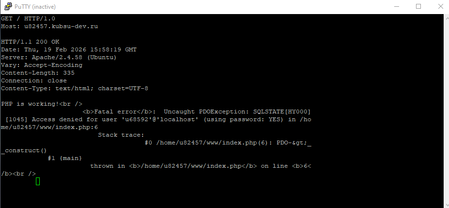
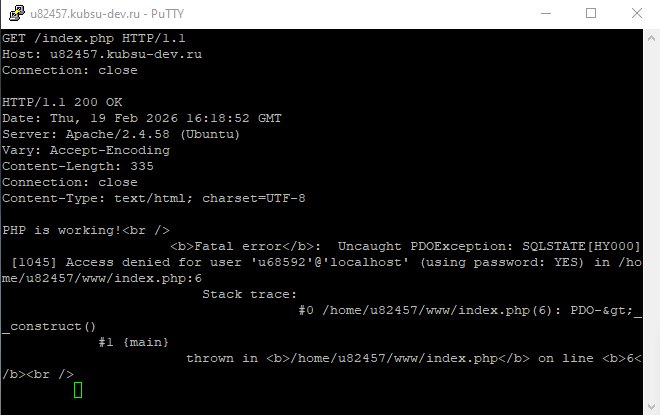
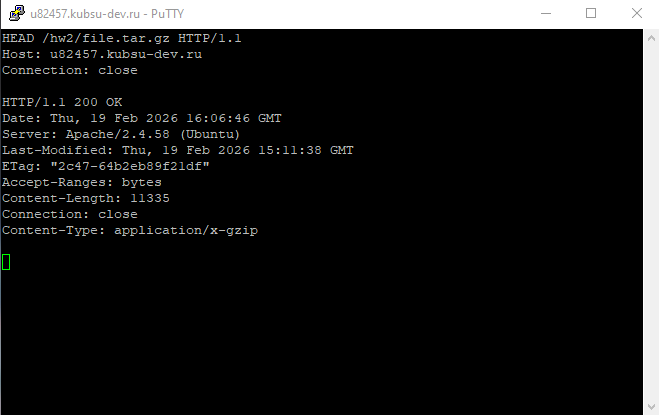
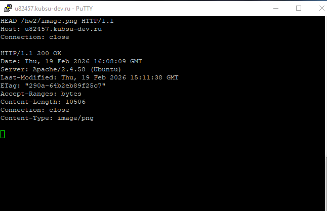
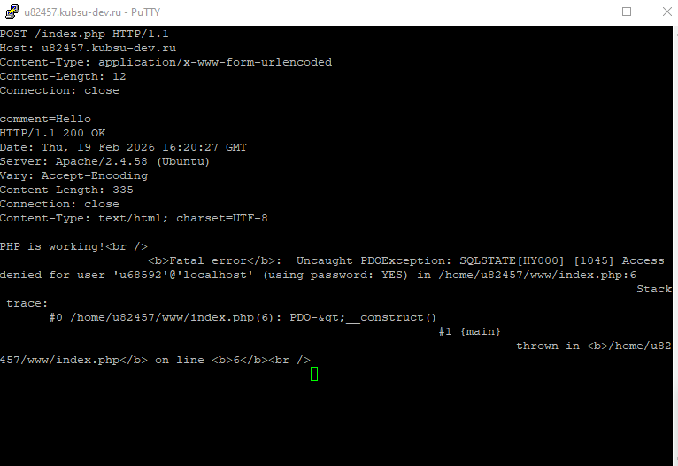
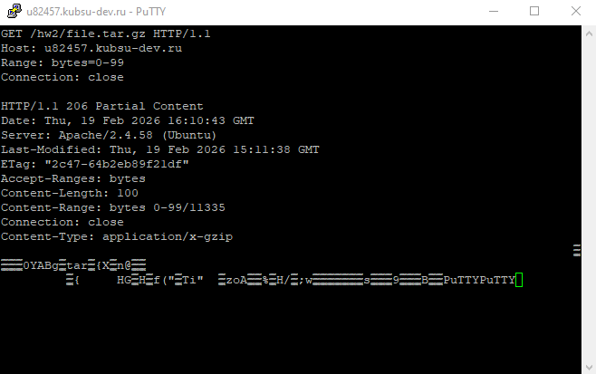
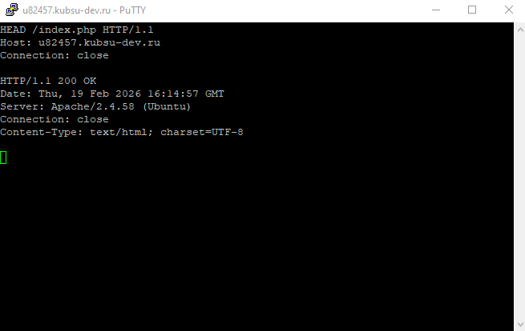

GET / HTTP/1.0
Host: u82457.kubsu-dev.ruЧто делает: Отправляет запрос на получение корневого ресурса (главной страницы) с использованием версии HTTP/1.0. В этой версии после ответа соединение обычно закрывается.
Результат (скриншот l1.png):
HTTP/1.1 200 OK – запрос выполнен успешно.Server: Apache/2.4.58 (Ubuntu), Content-Length: 335, Content-Type: text/html; charset=UTF-8.
Скриншот 1: GET / HTTP/1.0 (файл l1.png)
GET /index.php HTTP/1.1
Host: u82457.kubsu-dev.ru
Connection: closeЧто делает: Запрашивает конкретный ресурс – index.php – с использованием HTTP/1.1. Заголовок Connection: close указывает серверу закрыть соединение после ответа (удобно для ручных запросов).
Результат (скриншот l2.png):
HTTP/1.1 200 OK – файл найден и отдан.Content-Type: text/html; charset=UTF-8, длина 335 байт.
Скриншот 2: GET /index.php HTTP/1.1 (файл l2.png)
HEAD /hw2/file.tar.gz HTTP/1.1
Host: u82457.kubsu-dev.ru
Connection: closeЧто делает: Метод HEAD аналогичен GET, но сервер возвращает только заголовки, без тела. Это позволяет узнать размер файла (заголовок Content-Length) без его загрузки.
Результат (скриншот l3.png):
HTTP/1.1 200 OK – файл существует.Content-Length: 11335 – размер файла в байтах.Content-Type: application/x-gzip (gzip-архив).
Скриншот 3: HEAD /hw2/file.tar.gz (файл l3.png)
HEAD /hw2/image.png HTTP/1.1
Host: u82457.kubsu-dev.ru
Connection: closeЧто делает: Снова используем HEAD, чтобы получить заголовки для image.png и определить его MIME-тип.
Результат (скриншот l4.png):
HTTP/1.1 200 OK – файл найден.Content-Type: image/png – медиатип PNG-изображения.Content-Length: 10506 байт.
Скриншот 4: HEAD /hw2/image.png (файл l4.png)
POST /index.php HTTP/1.1
Host: u82457.kubsu-dev.ru
Content-Type: application/x-www-form-urlencoded
Content-Length: 12
Connection: close
comment=HelloТело запроса: comment=Hello (длина 12 байт).
Что делает: Метод POST передаёт данные на сервер. Здесь имитируется отправка формы с полем comment. Заголовок Content-Type указывает формат данных, Content-Length – их длину.
Результат (скриншот l5.png):
HTTP/1.1 200 OK – запрос принят и обработан (несмотря на ошибку в PHP).Content-Type: text/html; charset=UTF-8 и длину 335 байт.index.php выполнился и вернул результат.
Скриншот 5: POST /index.php (файл l5.png)
GET /hw2/file.tar.gz HTTP/1.1
Host: u82457.kubsu-dev.ru
Range: bytes=0-99
Connection: closeЧто делает: Заголовок Range запрашивает не весь файл, а только указанный диапазон байт (в данном случае с 0 по 99 включительно – первые 100 байт). Это позволяет частично загрузить файл.
Результат (скриншот l6.png):
HTTP/1.1 206 Partial Content – сервер вернул частичное содержимое.Content-Range: bytes 0-99/11335 – указан переданный диапазон и полный размер.Content-Length: 100 – длина переданных данных.
Скриншот 6: GET /hw2/file.tar.gz с Range (файл l6.png)
HEAD /index.php HTTP/1.1
Host: u82457.kubsu-dev.ru
Connection: closeЧто делает: Снова используем HEAD, чтобы узнать кодировку страницы, которая может быть указана в заголовке Content-Type после точки с запятой (charset=...).
Результат (скриншот l7.png):
HTTP/1.1 200 OK – ресурс доступен.Content-Type: text/html; charset=UTF-8 – явно указана кодировка UTF-8.Server, Date, Connection.
Скриншот 7: HEAD /index.php (файл l7.png)